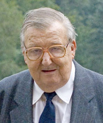

Особенности сети Петри и области их применения
Теория сетей Петри зародилась в 1962 году. Сети Петри разрабатывались
специально для моделирования тех систем, которые содержат взаимодействующие параллельные
компоненты. Впервые сети Петри предложил Карл Адам Петри. В своей докторской диссертации
"Kommunikation mit Automaten" ("Связь автоматов") Петри сформулировал основные понятия теории
связи асинхронных компонент вычислительной системы. В частности, он подробно рассмотрел описание
причинных связей между событиями. Его диссертация посвящена главным образом теоретической
разработке основных понятий, с которых начали развитие сети Петри.
Работа Петри привлекла внимание сотрудников из проекта Information System Theory (Теория
информационных систем) фирмы Applied Data Research (ADR). Ими была развита большая часть начал
теории, предложены обозначения и представления сетей Петри; показали, как сети Петри можно
применить к анализу и моделированию систем, включающих параллельные компоненты.
В настоящее время сети Петри являются распространенной моделью, позволяющей описывать структуру
и взаимодействие параллельно действующих объектов и процессов.

Достоинства аппарата сетей Петри:
- Сети Петри позволяют моделировать асинхронность и недетерминизм параллельных, независимых событий, параллелизм конвейерного типа, конфликтные ситуации между процессами.
- Сети Петри позволяют описывать как типовые ситуации в дискретных подсистемах, так и общую динамику работы сложной асинхронной системы.
- Сети Петри позволяют производить иерархическую детализацию программных и аппаратных подсистем модели, производить совместное отображение структуры управления и потоков данных.
- В последние годы появился ряда классов сетей, ориентированных на моделирование сложных систем с учетом таких факторов, как приоритетность процессов (сети с проверкой на нуль, приоритетные сети), временные параметры событий